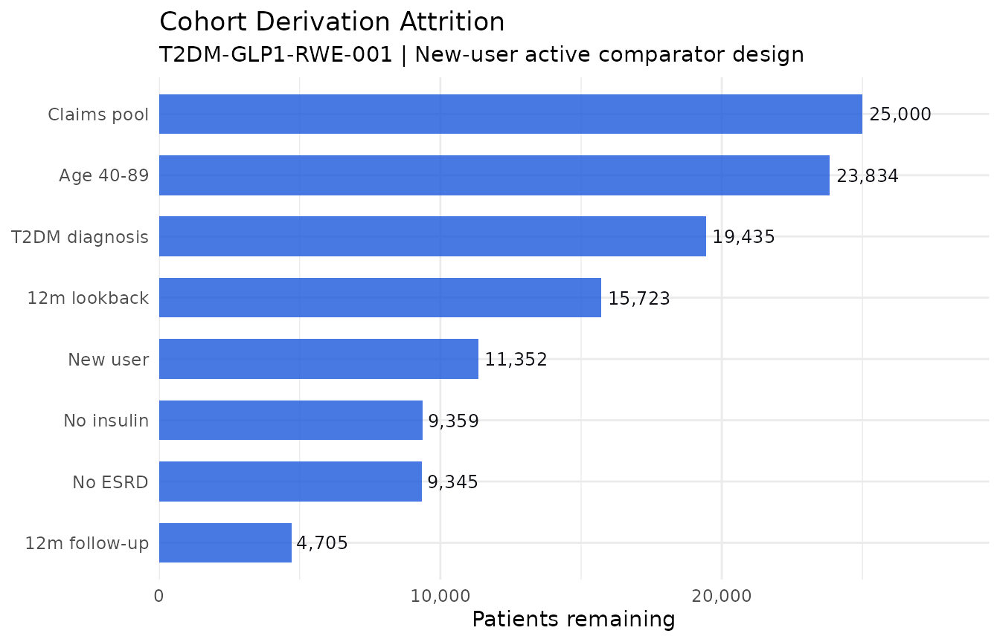
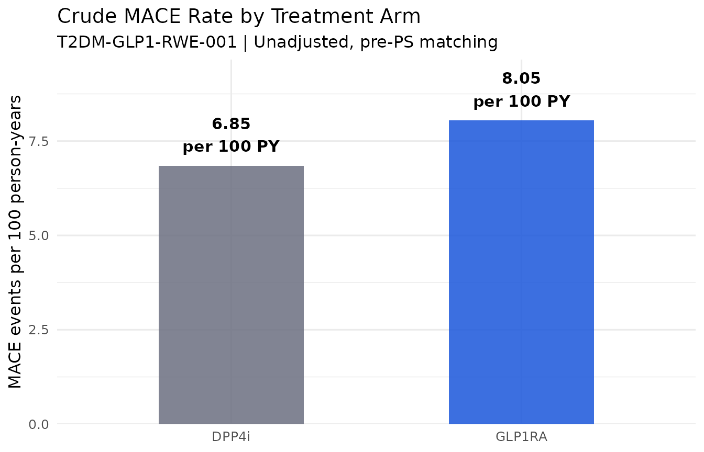

Row-level provenance in real-world evidence studies
New-user cohort derivation with complete exclusion documentation using lineager
Ndoh Penn
2026-06-26
Source:vignettes/articles/lineager-rwe.Rmd
lineager-rwe.RmdOverview
Real-world evidence studies live or die by their cohort definition. The new-user design, washout periods, lookback windows, prevalent user exclusions, and outcome ascertainment rules are all critical analytical decisions that HEOR reviewers, payers, and regulators scrutinise. Yet in most RWE studies, the documentation of these decisions is at the aggregate level: a CONSORT-style flow chart with total numbers at each step.
lineager brings row-level traceability to RWE cohort
derivation. Every patient record carries a lineage ID. Every
lg_filter() call requires a documented reason, and the
session accumulates an exclusion registry automatically as the pipeline
runs. Any patient can be traced through the complete cohort derivation —
from raw claims to the final analysis cohort — at any time.
This article demonstrates a complete new-user cohort derivation for a retrospective comparative effectiveness study of two diabetes medications in administrative claims data.
The study
A retrospective new-user active comparator study comparing GLP-1 receptor agonists (GLP-1 RA) versus DPP-4 inhibitors in adult patients with type 2 diabetes newly initiating therapy. Primary outcome: composite of major adverse cardiovascular events (MACE) at 12 months.
Setup
#>
#> Attaching package: 'dplyr'#> The following objects are masked from 'package:stats':
#>
#> filter, lag#> The following objects are masked from 'package:base':
#>
#> intersect, setdiff, setequal, unionSimulate administrative claims data
n_pool <- 25000L # Patient pool before eligibility screening
set.seed(2026)
claims_raw <- data.frame(
PATID = sprintf("PT-%07d", seq_len(n_pool)),
INDEX_DATE = as.Date("2022-01-01") +
sample(0:729, n_pool, replace = TRUE),
AGE_INDEX = round(rnorm(n_pool, mean = 61, sd = 12)),
SEX = sample(c("M", "F"), n_pool, replace = TRUE, prob = c(0.48, 0.52)),
INDEX_DRUG = sample(c("GLP1RA", "DPP4i"), n_pool, replace = TRUE,
prob = c(0.42, 0.58)),
LOOKBACK_MO = sample(6:36, n_pool, replace = TRUE),
T2DM_DX = sample(c(TRUE, FALSE), n_pool, replace = TRUE, prob = c(0.82, 0.18)),
PRIOR_USE = sample(c(TRUE, FALSE), n_pool, replace = TRUE, prob = c(0.28, 0.72)),
INSULIN_USE = sample(c(TRUE, FALSE), n_pool, replace = TRUE, prob = c(0.18, 0.82)),
CKD_STAGE = sample(c("NONE", "1-2", "3", "4", "5"),
n_pool, replace = TRUE,
prob = c(0.55, 0.18, 0.16, 0.08, 0.03)),
HF_DX = sample(c(TRUE, FALSE), n_pool, replace = TRUE, prob = c(0.14, 0.86)),
ESRD = sample(c(TRUE, FALSE), n_pool, replace = TRUE, prob = c(0.04, 0.96)),
FOLLOW_MO = round(runif(n_pool, min = 0.5, max = 24), 1),
MACE_12M = sample(c(TRUE, FALSE), n_pool, replace = TRUE, prob = c(0.07, 0.93)),
stringsAsFactors = FALSE
)
claims_raw$MACE_12M[claims_raw$FOLLOW_MO < 12] <- FALSE
claims_raw$ESRD[claims_raw$CKD_STAGE != "5"] <- FALSE
cat(sprintf("Claims pool: %d patients\n", nrow(claims_raw)))#> Claims pool: 25000 patientsStart the lineager session
lg_start(study_id = "T2DM-GLP1-RWE-001", analysis_id = "new-user-cohort-derivation")#> lineager: session started [study: T2DM-GLP1-RWE-001] [analysis: new-user-cohort-derivation]Tag the source dataset
lg_tag() embeds a column named USUBJID into
the lineage ID, when one is present, for human-readable IDs.
Administrative claims data conventionally uses a different identifier
(PATID here) — so we add a USUBJID column
purely for lineage embedding, while PATID remains the
identifier used throughout the actual analysis code.
claims_raw$USUBJID <- claims_raw$PATID
claims <- lg_tag(claims_raw, dataset_id = "CLAIMS_RAW", label = "Raw claims extract")#> lineager: tagged 'CLAIMS_RAW' — 25000 rows, 15 cols#> Tagged 25000 patient records#> <lg_df> 'CLAIMS_RAW' [4 × 4]
#> PATID INDEX_DRUG AGE_INDEX
#> 1 PT-0000001 DPP4i 50
#> 2 PT-0000002 DPP4i 59
#> 3 PT-0000003 GLP1RA 71
#> 4 PT-0000004 GLP1RA 70New-user cohort derivation
Each eligibility criterion is a separate lg_filter()
call with a documented reason. The exclusion registry and operation log
accumulate automatically — there is no separate disposition tracking to
maintain.
Criterion 1: Age 40–89 at index date
cohort <- lg_filter(
claims,
AGE_INDEX >= 40L & AGE_INDEX <= 89L,
reason = "Eligible age range 40-89 years at index date per SAP Section 3.1. Excludes paediatric patients and those with extreme age where T2DM prevalence and drug indication differ substantially.",
population = "AGE_ELIGIBLE"
)#> lineager: [CLAIMS_RAW] filter 'Eligible age range 40-89 years at index date per SAP Section 3.1. Excludes paediatric patients and those with extreme age where T2DM prevalence and drug indication differ substantially.' — 25000 in, 23834 out, 1166 excluded#> After age criterion: 23834 patientsCriterion 2: Type 2 diabetes diagnosis
cohort <- lg_filter(
cohort, T2DM_DX == TRUE,
reason = "Require confirmed T2DM diagnosis (ICD-10 E11.x) in 12 months prior to index date per SAP Section 3.1.2.",
population = "T2DM_CONFIRMED"
)#> lineager: [CLAIMS_RAW] filter 'Require confirmed T2DM diagnosis (ICD-10 E11.x) in 12 months prior to index date per SAP Section 3.1.2.' — 23834 in, 19435 out, 4399 excluded#> After T2DM diagnosis criterion: 19435 patientsCriterion 3: Minimum 12-month lookback
cohort <- lg_filter(
cohort, LOOKBACK_MO >= 12L,
reason = "Require >= 12 months continuous enrolment prior to index date per SAP Section 3.2.",
population = "LOOKBACK_ADEQUATE"
)#> lineager: [CLAIMS_RAW] filter 'Require >= 12 months continuous enrolment prior to index date per SAP Section 3.2.' — 19435 in, 15723 out, 3712 excluded#> After lookback criterion: 15723 patientsCriterion 4: New user — no prior use of index drug class
cohort <- lg_filter(
cohort, PRIOR_USE == FALSE,
reason = "Exclude prevalent users: no dispensing of index drug class in the 12-month lookback period per SAP Section 3.3 (new-user design).",
population = "NEW_USER"
)#> lineager: [CLAIMS_RAW] filter 'Exclude prevalent users: no dispensing of index drug class in the 12-month lookback period per SAP Section 3.3 (new-user design).' — 15723 in, 11352 out, 4371 excluded#> After new-user criterion: 11352 patientsCriterion 5: Exclude insulin users
cohort <- lg_filter(
cohort, INSULIN_USE == FALSE,
reason = "Exclude patients on insulin at index date per SAP Section 3.4.",
population = "NO_INSULIN"
)#> lineager: [CLAIMS_RAW] filter 'Exclude patients on insulin at index date per SAP Section 3.4.' — 11352 in, 9359 out, 1993 excluded#> After insulin exclusion: 9359 patientsCriterion 6: Exclude end-stage renal disease
cohort <- lg_filter(
cohort, ESRD == FALSE,
reason = "Exclude ESRD (CKD Stage 5 or renal replacement therapy) at or before index date per SAP Section 3.5.",
population = "NO_ESRD"
)#> lineager: [CLAIMS_RAW] filter 'Exclude ESRD (CKD Stage 5 or renal replacement therapy) at or before index date per SAP Section 3.5.' — 9359 in, 9345 out, 14 excluded#> After ESRD exclusion: 9345 patientsCriterion 7: Minimum 12 months follow-up available
cohort <- lg_filter(
cohort, FOLLOW_MO >= 12L,
reason = "Require >= 12 months follow-up from index date for the primary 12-month MACE outcome per SAP Section 3.6.",
population = "FOLLOWUP_ADEQUATE"
)#> lineager: [CLAIMS_RAW] filter 'Require >= 12 months follow-up from index date for the primary 12-month MACE outcome per SAP Section 3.6.' — 9345 in, 4705 out, 4640 excluded#> After follow-up criterion: 4705 patientsDocument the analysis population
lg_population() registers the cumulative cohort
definition as a named population flag, linking the SAP criteria to a
single documented object.
cohort$NUC_FL <- "Y" # all rows remaining at this point are the final cohort
lg_population(
cohort,
flag_var = "NUC_FL",
label = "New-User Cohort Flag",
definition = "Adults aged 40-89 with confirmed T2DM, adequate lookback, new to index drug class, no insulin use, no ESRD, and adequate follow-up",
incl_criteria = c("Age 40-89", "T2DM confirmed", ">=12mo lookback",
"New user of index drug", "No insulin", "No ESRD",
">=12mo follow-up"),
excl_criteria = "Any of the above criteria not met"
)#> lineager: population 'NUC_FL' (New-User Cohort Flag) — 4705 included, 0 excludedDerive analysis variables
cohort <- lg_derive(
cohort,
CKD_MOD_SEV = CKD_STAGE %in% c("3", "4"),
HF_FLAG = HF_DX == TRUE,
HIGH_RISK_CV = (AGE_INDEX >= 65L) | (HF_DX == TRUE) | (CKD_STAGE %in% c("3","4","5")),
description = "Derive cardiovascular risk flags for propensity score model: CKD_MOD_SEV (Stage 3/4), HF_FLAG, composite HIGH_RISK_CV per SAP Section 5.2"
)#> lineager: [CLAIMS_RAW] derive — Derive cardiovascular risk flags for propensity score model: CKD_MOD_SEV (Stage 3/4), HF_FLAG, composite HIGH_RISK_CV per SAP Section 5.2
cohort <- lg_derive(
cohort,
STUDY_YEAR = as.integer(format(INDEX_DATE, "%Y")),
description = "Derive index year for calendar time confounding adjustment"
)#> lineager: [CLAIMS_RAW] derive — Derive index year for calendar time confounding adjustment
cohort_final <- lg_derive(
cohort,
MACE_FLAG = MACE_12M == TRUE,
description = "Derive primary outcome indicator from composite MACE endpoint at 12 months per SAP Section 4.1"
)#> lineager: [CLAIMS_RAW] derive — Derive primary outcome indicator from composite MACE endpoint at 12 months per SAP Section 4.1Final cohort composition
cohort_char <- cohort_final |>
group_by(INDEX_DRUG) |>
summarise(
N = n(),
Age_mean = round(mean(AGE_INDEX), 1),
Female_pct = round(mean(SEX == "F") * 100, 1),
HighRisk_pct = round(mean(HIGH_RISK_CV) * 100, 1),
MACE_12m_pct = round(mean(MACE_FLAG) * 100, 1),
.groups = "drop"
)
knitr::kable(
cohort_char,
col.names = c("Treatment", "N", "Age (mean)", "Female (%)",
"High CV risk (%)", "MACE 12m (%)"),
caption = "Final cohort characteristics — T2DM-GLP1-RWE-001"
)| Treatment | N | Age (mean) | Female (%) | High CV risk (%) | MACE 12m (%) |
|---|---|---|---|---|---|
| DPP4i | 2743 | 62.1 | 51.9 | 63.7 | 6.9 |
| GLP1RA | 1962 | 61.4 | 48.8 | 61.4 | 8.1 |
Exclusion registry and attrition
lg_exclusions() returns the row-level exclusion
registry. lg_operations() returns the operation-level log
with rows_in/rows_out at each step — the right
source for an attrition waterfall.
excl <- lg_exclusions()#> lineager: 20295 exclusion(s) retrieved
excl |>
count(population, reason) |>
knitr::kable(
col.names = c("Population gate", "Reason", "N excluded"),
caption = "Cohort derivation exclusion registry — T2DM-GLP1-RWE-001"
)| Population gate | Reason | N excluded |
|---|---|---|
| AGE_ELIGIBLE | Eligible age range 40-89 years at index date per SAP Section 3.1. Excludes paediatric patients and those with extreme age where T2DM prevalence and drug indication differ substantially. | 1166 |
| FOLLOWUP_ADEQUATE | Require >= 12 months follow-up from index date for the primary 12-month MACE outcome per SAP Section 3.6. | 4640 |
| LOOKBACK_ADEQUATE | Require >= 12 months continuous enrolment prior to index date per SAP Section 3.2. | 3712 |
| NEW_USER | Exclude prevalent users: no dispensing of index drug class in the 12-month lookback period per SAP Section 3.3 (new-user design). | 4371 |
| NO_ESRD | Exclude ESRD (CKD Stage 5 or renal replacement therapy) at or before index date per SAP Section 3.5. | 14 |
| NO_INSULIN | Exclude patients on insulin at index date per SAP Section 3.4. | 1993 |
| T2DM_CONFIRMED | Require confirmed T2DM diagnosis (ICD-10 E11.x) in 12 months prior to index date per SAP Section 3.1.2. | 4399 |
ops <- lg_operations() |> filter(op_type == "FILTER")
waterfall <- data.frame(
label = c("Claims pool", ops$description),
n = c(n_pool, ops$rows_out),
stringsAsFactors = FALSE
)
waterfall$label_short <- c(
"Claims pool", "Age 40-89", "T2DM diagnosis", "12m lookback",
"New user", "No insulin", "No ESRD", "12m follow-up"
)
waterfall$step_num <- seq_len(nrow(waterfall))
ggplot(waterfall, aes(x = reorder(label_short, -step_num), y = n)) +
geom_col(fill = "#1a56db", alpha = 0.8, width = 0.65) +
geom_text(aes(label = scales::comma(n)), hjust = -0.1, size = 3.2, colour = "#0f1117") +
coord_flip() +
scale_y_continuous(labels = scales::comma, expand = expansion(mult = c(0, 0.18))) +
labs(
title = "Cohort Derivation Attrition",
subtitle = "T2DM-GLP1-RWE-001 | New-user active comparator design",
x = NULL, y = "Patients remaining"
) +
theme_minimal(base_size = 11)
CONSORT-style disposition
lg_disposition() summarises the exclusion registry
automatically, derived from every lg_filter() call above —
there is no separate group definition to maintain.
lg_disposition(by = "population")#> group n_excluded
#> 1 FOLLOWUP_ADEQUATE 4640
#> 2 T2DM_CONFIRMED 4399
#> 3 NEW_USER 4371
#> 4 LOOKBACK_ADEQUATE 3712
#> 5 NO_INSULIN 1993
#> 6 AGE_ELIGIBLE 1166
#> 7 NO_ESRD 14Trace a patient
example_pat <- cohort_final$PATID[1L]
lg_trace(example_pat)#>
#> ── lineager trace: USUBJID 'PT-0000017' ──
#>
#> Appears in: CLAIMS_RAW
#>
#> Operations:
#> [FILTER] CLAIMS_RAW: Eligible age range 40-89 years at index date per SAP Section (25000→23834)
#> [FILTER] CLAIMS_RAW: Require confirmed T2DM diagnosis (ICD-10 E11.x) in 12 months (23834→19435)
#> [FILTER] CLAIMS_RAW: Require >= 12 months continuous enrolment prior to index dat (19435→15723)
#> [FILTER] CLAIMS_RAW: Exclude prevalent users: no dispensing of index drug class i (15723→11352)
#> [FILTER] CLAIMS_RAW: Exclude patients on insulin at index date per SAP Section 3. (11352→9359)
#> [FILTER] CLAIMS_RAW: Exclude ESRD (CKD Stage 5 or renal replacement therapy) at o (9359→9345)
#> [FILTER] CLAIMS_RAW: Require >= 12 months follow-up from index date for the prima (9345→4705)
#> [DERIVE] CLAIMS_RAW: Derive cardiovascular risk flags for propensity score model: (4705→4705)
#> [DERIVE] CLAIMS_RAW: Derive index year for calendar time confounding adjustment (4705→4705)
#> [DERIVE] CLAIMS_RAW: Derive primary outcome indicator from composite MACE endpoin (4705→4705)
#>
#> Exclusions: none
#>
#> Registered populations:
#> NUC_FL: New-User Cohort Flag
excluded_pat <- claims_raw$PATID[claims_raw$T2DM_DX == FALSE][1L]
lg_trace(excluded_pat)#>
#> ── lineager trace: USUBJID 'PT-0000002' ──
#>
#> Appears in: CLAIMS_RAW
#>
#> Operations:
#> [FILTER] CLAIMS_RAW: Eligible age range 40-89 years at index date per SAP Section (25000→23834)
#> [FILTER] CLAIMS_RAW: Require confirmed T2DM diagnosis (ICD-10 E11.x) in 12 months (23834→19435)
#> [FILTER] CLAIMS_RAW: Require >= 12 months continuous enrolment prior to index dat (19435→15723)
#> [FILTER] CLAIMS_RAW: Exclude prevalent users: no dispensing of index drug class i (15723→11352)
#> [FILTER] CLAIMS_RAW: Exclude patients on insulin at index date per SAP Section 3. (11352→9359)
#> [FILTER] CLAIMS_RAW: Exclude ESRD (CKD Stage 5 or renal replacement therapy) at o (9359→9345)
#> [FILTER] CLAIMS_RAW: Require >= 12 months follow-up from index date for the prima (9345→4705)
#> [DERIVE] CLAIMS_RAW: Derive cardiovascular risk flags for propensity score model: (4705→4705)
#> [DERIVE] CLAIMS_RAW: Derive index year for calendar time confounding adjustment (4705→4705)
#> [DERIVE] CLAIMS_RAW: Derive primary outcome indicator from composite MACE endpoin (4705→4705)
#>
#> Exclusions (1):
#> ✗ [CLAIMS_RAW] Require confirmed T2DM diagnosis (ICD-10 E11.x) in 12 months prior to index date per SAP Section 3.1.2. [pop: T2DM_CONFIRMED]
#>
#> Registered populations:
#> NUC_FL: New-User Cohort FlagOutcome analysis
outcome_summary <- cohort_final |>
group_by(INDEX_DRUG) |>
summarise(
N = n(),
Events = sum(MACE_FLAG),
PersonYrs = round(sum(pmin(FOLLOW_MO, 12) / 12), 1),
Rate_100py = round(Events / PersonYrs * 100, 2),
.groups = "drop"
)
knitr::kable(
outcome_summary,
col.names = c("Treatment", "N", "MACE events", "Person-years", "Rate per 100 PY"),
caption = "Primary outcome: MACE at 12 months — unadjusted"
)| Treatment | N | MACE events | Person-years | Rate per 100 PY |
|---|---|---|---|---|
| DPP4i | 2743 | 188 | 2743 | 6.85 |
| GLP1RA | 1962 | 158 | 1962 | 8.05 |
outcome_summary |>
ggplot(aes(x = INDEX_DRUG, y = Rate_100py, fill = INDEX_DRUG)) +
geom_col(width = 0.5, alpha = 0.85) +
geom_text(aes(label = sprintf("%.2f\nper 100 PY", Rate_100py)),
vjust = -0.4, size = 4, fontface = "bold") +
scale_fill_manual(values = c("GLP1RA" = "#1a56db", "DPP4i" = "#6b6f80")) +
scale_y_continuous(expand = expansion(mult = c(0, 0.2))) +
labs(
title = "Crude MACE Rate by Treatment Arm",
subtitle = "T2DM-GLP1-RWE-001 | Unadjusted, pre-PS matching",
x = NULL, y = "MACE events per 100 person-years"
) +
theme_minimal(base_size = 12) +
theme(legend.position = "none")
Provenance report
lg_report(
output = "outputs/T2DM-GLP1-RWE-001_cohort_provenance_v1.html",
title = "Cohort Derivation Provenance — T2DM-GLP1-RWE-001",
study_id = "T2DM-GLP1-RWE-001",
sponsor = "Example Pharma Ltd",
author = "J. Smith, Biostatistician"
)End session
lg_end()#> lineager: session ended — 10 operation(s), 20295 exclusion(s), 1 population(s), 0 var spec(s)Why row-level provenance matters in RWE
Aggregate exclusion flow charts are table stakes. Row-level provenance is what distinguishes a reproducible RWE study from a defensible one:
For replication: another analyst can independently derive the same cohort and verify that the same patients are included/excluded at each step — not just the same counts.
For regulatory review: NICE, ICER, and FDA RWE reviewers increasingly ask for evidence that the operational cohort definition matches the pre-specified SAP. Row-level traceability makes this verifiable, not just assertable.
For sensitivity analyses: re-running the derivation
under an alternative lookback window or relaxed eligibility criterion,
lg_trace() shows exactly which patients changed status and
why.
For audit: the provenance report is a self-contained HTML document recording the complete derivation history — without requiring access to the original code or data environment.
Session information
#> R version 4.6.1 (2026-06-24)
#> Platform: x86_64-pc-linux-gnu
#> Running under: Ubuntu 24.04.4 LTS
#>
#> Matrix products: default
#> BLAS: /usr/lib/x86_64-linux-gnu/openblas-pthread/libblas.so.3
#> LAPACK: /usr/lib/x86_64-linux-gnu/openblas-pthread/libopenblasp-r0.3.26.so; LAPACK version 3.12.0
#>
#> locale:
#> [1] LC_CTYPE=C.UTF-8 LC_NUMERIC=C LC_TIME=C.UTF-8
#> [4] LC_COLLATE=C.UTF-8 LC_MONETARY=C.UTF-8 LC_MESSAGES=C.UTF-8
#> [7] LC_PAPER=C.UTF-8 LC_NAME=C LC_ADDRESS=C
#> [10] LC_TELEPHONE=C LC_MEASUREMENT=C.UTF-8 LC_IDENTIFICATION=C
#>
#> time zone: UTC
#> tzcode source: system (glibc)
#>
#> attached base packages:
#> [1] stats graphics grDevices utils datasets methods base
#>
#> other attached packages:
#> [1] ggplot2_4.0.3 dplyr_1.2.1 lineager_0.1.0
#>
#> loaded via a namespace (and not attached):
#> [1] gtable_0.3.6 jsonlite_2.0.0 compiler_4.6.1 tidyselect_1.2.1
#> [5] jquerylib_0.1.4 systemfonts_1.3.2 scales_1.4.0 textshaping_1.0.5
#> [9] yaml_2.3.12 fastmap_1.2.0 R6_2.6.1 labeling_0.4.3
#> [13] generics_0.1.4 knitr_1.51 htmlwidgets_1.6.4 tibble_3.3.1
#> [17] desc_1.4.3 bslib_0.11.0 pillar_1.11.1 RColorBrewer_1.1-3
#> [21] rlang_1.3.0 cachem_1.1.0 xfun_0.59 S7_0.2.2
#> [25] fs_2.1.0 sass_0.4.10 otel_0.2.0 cli_3.6.6
#> [29] withr_3.0.3 pkgdown_2.2.1 magrittr_2.0.5 digest_0.6.39
#> [33] grid_4.6.1 lifecycle_1.0.5 vctrs_0.7.3 evaluate_1.0.5
#> [37] glue_1.8.1 farver_2.1.2 ragg_1.5.2 rmarkdown_2.31
#> [41] tools_4.6.1 pkgconfig_2.0.3 htmltools_0.5.9